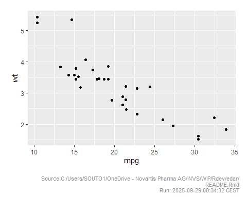
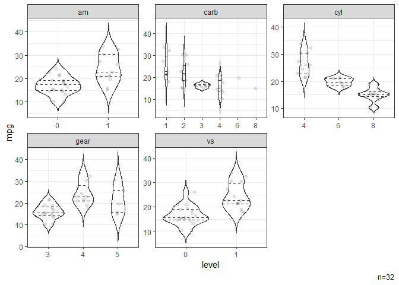

The goal of edar is to provide some convenient functions to facilitate common tasks in exploratory data analysis.
Citation
Sou T (2025). edar: Convenient Functions for Exploratory Data Analysis. R package version 0.0.6, https://github.com/soutomas/edar.
Installation
# From CRAN - for the latest CRAN release
install.packages("edar")
# From GitHub - for the development version
# install.packages("pak")
pak::pak("soutomas/edar")Example
Summary
It is often helpful to see a quick summary of the dataset.
library(edar)
#>
#> Attaching package: 'edar'
#> The following object is masked from 'package:stats':
#>
#> filter
# Data
dat = mtcars |> mutate(across(c(am,carb,cyl,gear,vs),factor))
# Summaries of all continuous variables.
dat |> summ_by()
#> NB: Non-numeric variables are dropped.
#> Dropped: cyl vs am gear carb
#> Adding missing grouping variables: `name`
#> # A tibble: 6 × 10
#> name n nNA Mean SD Min P25 Med P75 Max
#> <chr> <int> <int> <dbl> <dbl> <dbl> <dbl> <dbl> <dbl> <dbl>
#> 1 disp 32 0 231. 124. 71.1 121. 196. 326 472
#> 2 drat 32 0 3.60 0.535 2.76 3.08 3.70 3.92 4.93
#> 3 hp 32 0 147. 68.6 52 96.5 123 180 335
#> 4 mpg 32 0 20.1 6.03 10.4 15.4 19.2 22.8 33.9
#> 5 qsec 32 0 17.8 1.79 14.5 16.9 17.7 18.9 22.9
#> 6 wt 32 0 3.22 0.978 1.51 2.58 3.32 3.61 5.42
# Summaries of a selected variable after grouping.
dat |> summ_by(mpg,vs)
#> Adding missing grouping variables: `vs`
#> # A tibble: 2 × 10
#> vs n nNA Mean SD Min P25 Med P75 Max
#> <fct> <int> <int> <dbl> <dbl> <dbl> <dbl> <dbl> <dbl> <dbl>
#> 1 0 18 0 16.6 3.86 10.4 14.8 15.6 19.1 26
#> 2 1 14 0 24.6 5.38 17.8 21.4 22.8 29.6 33.9
# Summaries of all categorical variables.
dat |> summ_cat()
#> NB: Numeric variables are dropped.
#> Dropped: mpg disp hp drat wt qsec
#> $cyl
#> cyl n percent
#> 4 11 0.34375
#> 6 7 0.21875
#> 8 14 0.43750
#> Total 32 1.00000
#>
#> $vs
#> vs n percent
#> 0 18 0.5625
#> 1 14 0.4375
#> Total 32 1.0000
#>
#> $am
#> am n percent
#> 0 19 0.59375
#> 1 13 0.40625
#> Total 32 1.00000
#>
#> $gear
#> gear n percent
#> 3 15 0.46875
#> 4 12 0.37500
#> 5 5 0.15625
#> Total 32 1.00000
#>
#> $carb
#> carb n percent
#> 1 7 0.21875
#> 2 10 0.31250
#> 3 3 0.09375
#> 4 10 0.31250
#> 6 1 0.03125
#> 8 1 0.03125
#> Total 32 1.00000Tables
Results can be viewed directly in a flextable object.
# Show data frame as a flextable object.
dat |> summ_by(mpg,vs) |> ft()
#> Adding missing grouping variables: `vs`
Visualisation
Variables can be quickly visualised for exploratory graphical analysis.
# Scatter plot showing correlation.
dat |> ggxy(hp,disp)
#> `geom_smooth()` using formula = 'y ~ x'
# Histograms of all continuous variables.
dat |> gghist()
#> NB: Non-numeric variables are dropped.
#> Dropped: cyl vs am gear carb
# Box plots stratified by categorical variables.
dat |> ggbox(mpg)
#> NB: Numeric variables are dropped.
#> Dropped: disp hp drat wt qsec
# Violin plots stratified by categorical variables.
dat |> ggvio(mpg)
#> NB: Numeric variables are dropped.
#> Dropped: disp hp drat wt qsec
#> Warning: Groups with fewer than two datapoints have been dropped.
#> ℹ Set `drop = FALSE` to consider such groups for position adjustment purposes.
#> Groups with fewer than two datapoints have been dropped.
#> ℹ Set `drop = FALSE` to consider such groups for position adjustment purposes.
# Time-profile plot by subject.
Theoph |> ggtpp(Time, conc, id=Subject, xlab="Time [h]", ylab="Concentration [mg/L]")